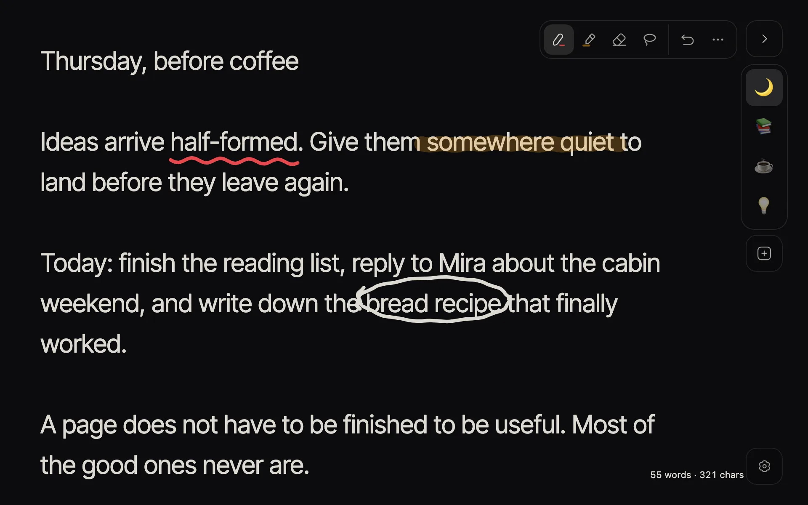
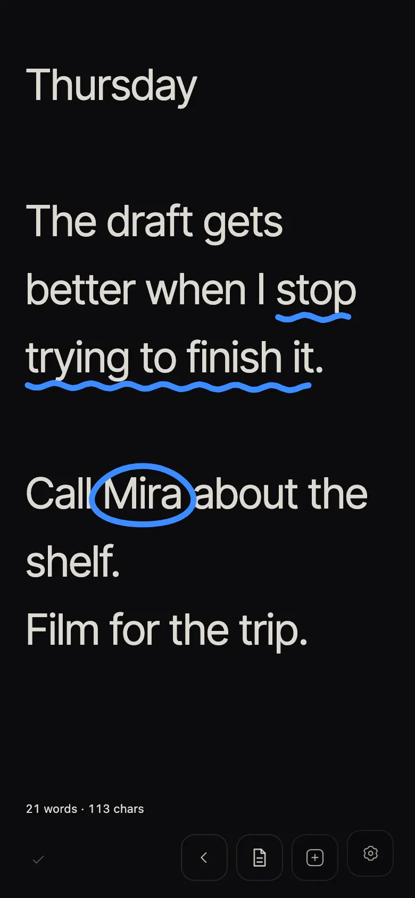

A quiet, local-first place to think.
A writing board for text and quick sketches. It runs in your browser and keeps everything on this device.
-
Notes stay in this browser
Pages and drawings are saved on this device. Nothing is uploaded unless you share a copy.
-
Works offline after the first visit
Once it has loaded, the app opens and saves without a connection.
-
No account
Nothing to sign up for. No analytics and no automatic sync.


Install the app
Installed, Blackboard Text opens in its own window, straight to your notes. It uses the same storage as this site in this browser, so there is nothing to move.
In Chrome or Edge, use the install icon in the address bar, or open the browser menu and choose Install.
Installed. Open Blackboard Text from your apps.
Browser extension
A personal build you load yourself in Chrome or Edge. It is not in an extension store.
- Download
blackboard-text-extension-__APP_VERSION__.zipfrom the latest release and unzip it. - Open
chrome://extensionsoredge://extensionsand turn on Developer mode. - Choose Load unpacked and select the unzipped folder.
The extension keeps its own storage, separate from the web app. To move notes between them, export a backup in one (Settings → Your data → Export backup) and import it in the other.
Sharing a page
Sharing sends a copy of one page as it is at that moment (Settings → Page actions → Share a copy…). Anyone with the link can read the copy, and later edits to your page do not change it.
- Full link
- The copy lives inside the link itself, and nothing is uploaded. Because the copy is not stored anywhere, a full link cannot be revoked.
- Short link
- An explicit copy is stored on the sharing service, which keeps the link short. You can disable it later from the same browser; copies people already saved stay with them.
Questions
- Where are my notes?
- In this browser on this device, in the site’s local storage for your browser profile. There is no copy on a server.
- What if I clear site data?
- The notes stored here are deleted with it. Export a backup first: Settings → Your data → Export backup.
- Is there sync?
- No. To move notes to another browser or device, export a backup here and import it there.
- Which browsers?
- It is built for Chrome and Edge, where it can also be installed. Other current browsers can usually open it; where a browser cannot stop two tabs from overwriting each other, notes open read-only.